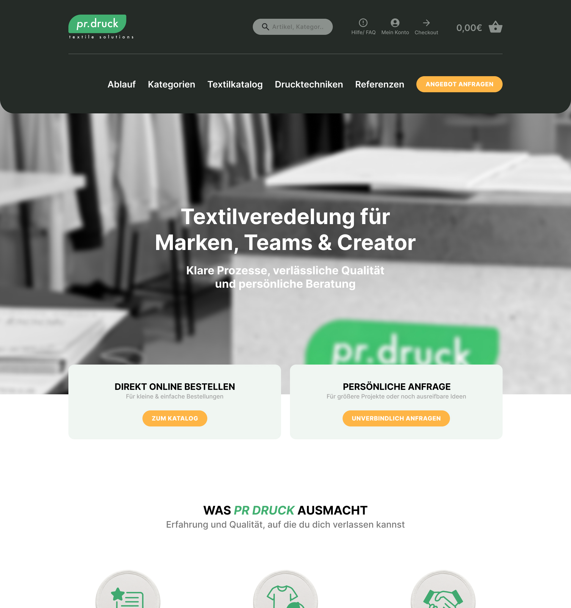
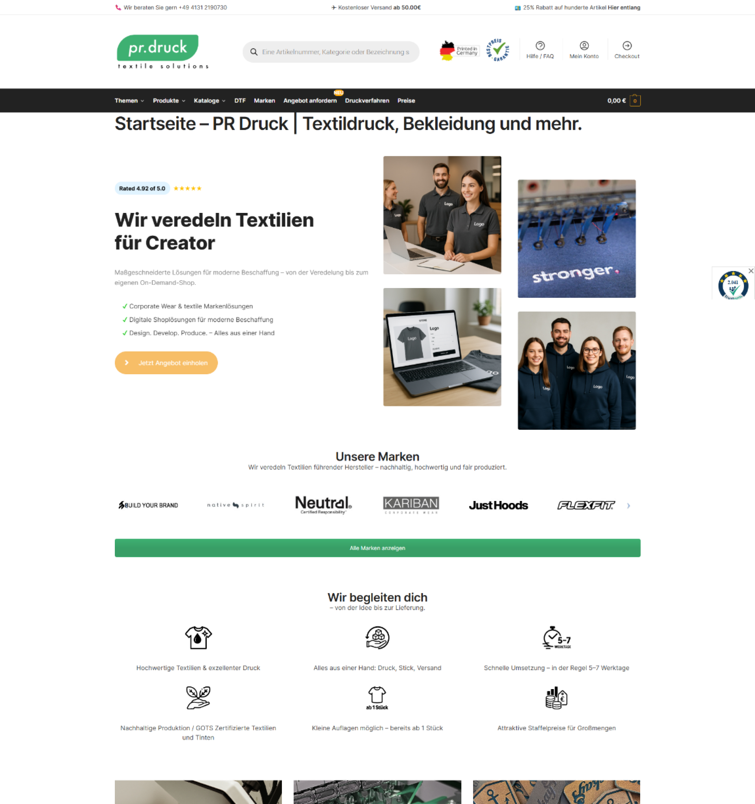
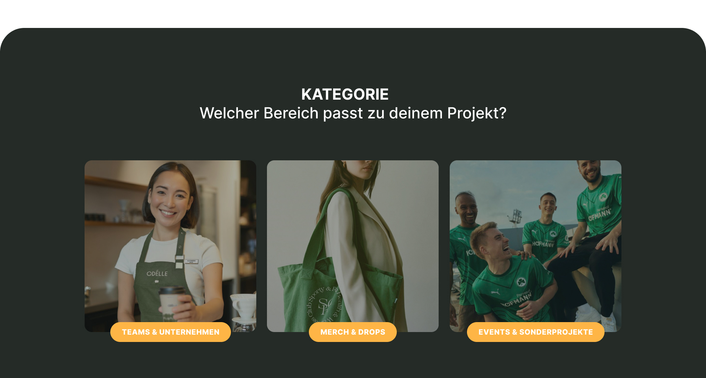
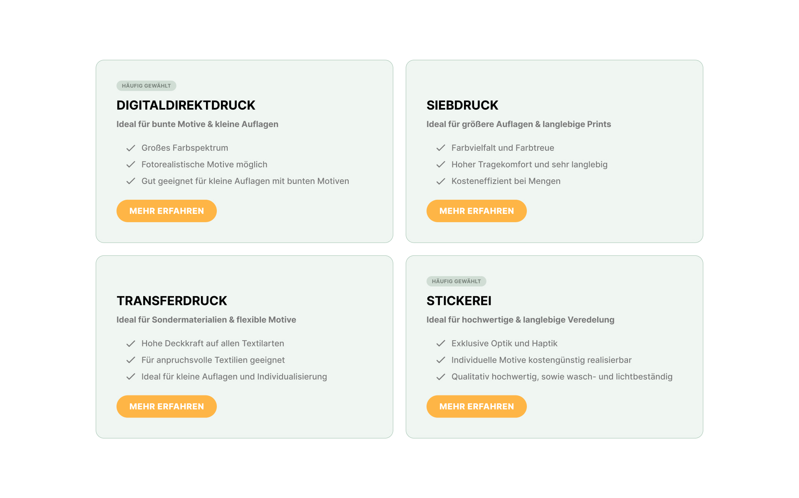
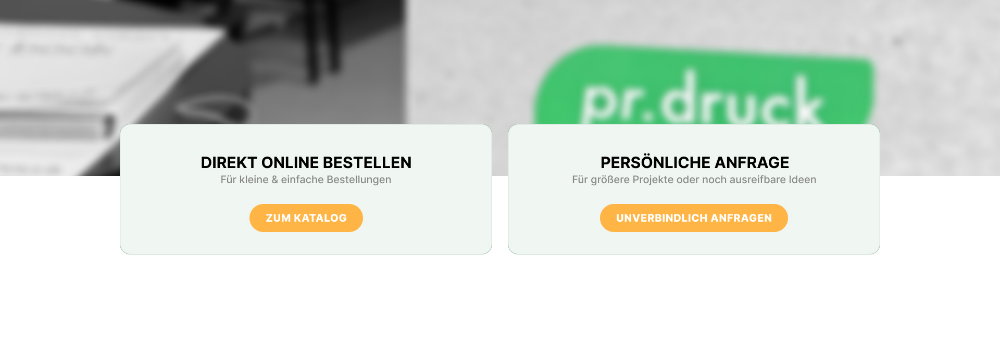

Redesign der Website eines Anbieters für Textilveredelung. Als Mediengestalterin bei pr.druck war die Auftragsannahme am Telefon Teil meines Jobs, nicht nur das Design. Dabei hörte ich aus erster Hand, woran die alte Seite scheiterte: Kund:innen riefen für Informationen an, die längst online standen, nur total versteckt.


Alt NeuDie Antwort stand schon da, nur keiner fand sie.
Als Mediengestalterin bei pr.druck war die Auftragsannahme am Telefon Teil meines Jobs, nicht nur das Design.
Kein Interview, keine Umfrage. Ich habe die immer gleichen Fragen live von echten Kund:innen bekommen, während ich gleichzeitig wusste: die Antwort steht eigentlich auf der Website.
Dieselben drei, vier Fragen, Woche für Woche.
Welche Drucktechniken es gibt und was sie kosten. Ob auch kleine Stückzahlen für Teams möglich sind. Ob die Marke selbst liefern kann oder man eigene Textilien mitbringen darf. Alles Dinge, die auf der Seite standen, aber in Fließtext-Absätzen vergraben oder unter falschen Menüpunkten.
Es fehlte keine Information. Es fehlte eine Struktur, die erkennt, wonach jemand sucht, und ihm die passende Antwort direkt zeigt.
Drei strukturelle Probleme, keine Textprobleme.
Die bestehende Seite hatte fast alle Inhalte, die es brauchte. Das Problem lag in der Anordnung: Es gab keine Sortierung nach Zielgruppe, Drucktechniken waren nur an einer Stelle knapp erwähnt, und kleine Bestellungen liefen über denselben Weg wie große Team-Anfragen.
Keine Trennung nach Zielgruppe: Merch-Drops, Teams/Unternehmen und Sonderanwendungen standen alle im selben, undifferenzierten Textblock.
Drucktechniken (Direktdruck, Siebdruck, Transferdruck, Sticker) wurden nirgends vergleichbar nebeneinander gezeigt, obwohl genau das die häufigste Telefonfrage war.
Kleine Bestellungen und große Team-/Unternehmensanfragen liefen über denselben Weg – ohne Unterscheidung zwischen „schnell online kaufen“ und „erst beraten lassen“.
Also habe ich nach Person sortiert, nicht nach Produkt.
Wer auf die Seite kommt, will meist nur eine der drei Antworten.
Aus den wiederkehrenden Anrufen ließen sich drei klare Anliegen ablesen. Die neue Struktur macht daraus drei eigene Einstiege, statt alle in einem Text zu vermischen.
- Kleinserien für Creator
- Schnelle Umsetzung
- Direkter Online-Bestellweg
- Größere Stückzahlen
- Persönliche Anfrage statt Sofortkauf
- Firmenbezug im Ton
- Individuelle Materialien
- Beratung statt Katalog
- Anfragebasiert

prdruck/zielgruppe.jpgDie häufigste Anruf-Frage bekam einen eigenen Bereich.
Digitaldirektdruck, Siebdruck, Transferdruck und Sticker jetzt nebeneinander statt verstreut im Fließtext, jeweils mit knapper Einordnung, wofür sich welche Technik eignet.

prdruck/drucktechniken.jpgZwei Wege, von Anfang an getrennt.
Kleine Bestellungen und große Team- oder Unternehmensanfragen liefen vorher über denselben Weg. Jetzt trennt der Hero das von Anfang an: „Direkt online bestellen“ für kleine, einfache Bestellungen, „Persönliche Anfrage“ für größere Projekte, die Beratung brauchen.

prdruck/kaufweg.jpgVom Bestand über Lo-Fi zum fertigen Ergebnis.
Zwei Lo-Fi-Runden, bevor die Farbe dazukam.
Die Grobstruktur (Hero → Was uns besonders macht → Gruppierung nach Zielgruppe → Textilien → Drucktechniken) stand schon im ersten Lo-Fi. Die zweite Runde hat vor allem die zwei Kaufwege in den Hero gezogen und die Zielgruppen-Cluster geschärft, bevor daraus das finale Hi-Fi-Design wurde.
Kein A/B-Test, aber ein klarer Unterschied.
Die Fragen vom Telefon lassen sich jetzt alle in unter zwei Klicks beantworten.
Drucktechniken, Zielgruppen-Cluster und die zwei Kaufwege sitzen jetzt dort, wo sie im echten Kundenkontakt gebraucht wurden, nicht dort, wo sie zufällig im alten Text standen. Das lässt sich qualitativ begründen, nicht mit einer Kennzahl belegen, dafür hätte es eine Testphase mit der echten Seite gebraucht.
Was diese Case Study nicht beweist.
Zwei Grenzen, ehrlich benannt.
Keine formalen Interviews oder Tests
Die Grundlage ist eigene Beobachtung im Kundensupport, keine strukturierte Nutzerforschung. → Reicht für wiederkehrende, eindeutige Muster, aber nicht für seltenere Bedürfnisse.
Kein Live-Vergleich
Ob die Anrufe dadurch wirklich zurückgehen, wurde nicht gemessen. → Wäre der nächste Schritt bei einem echten Rollout.